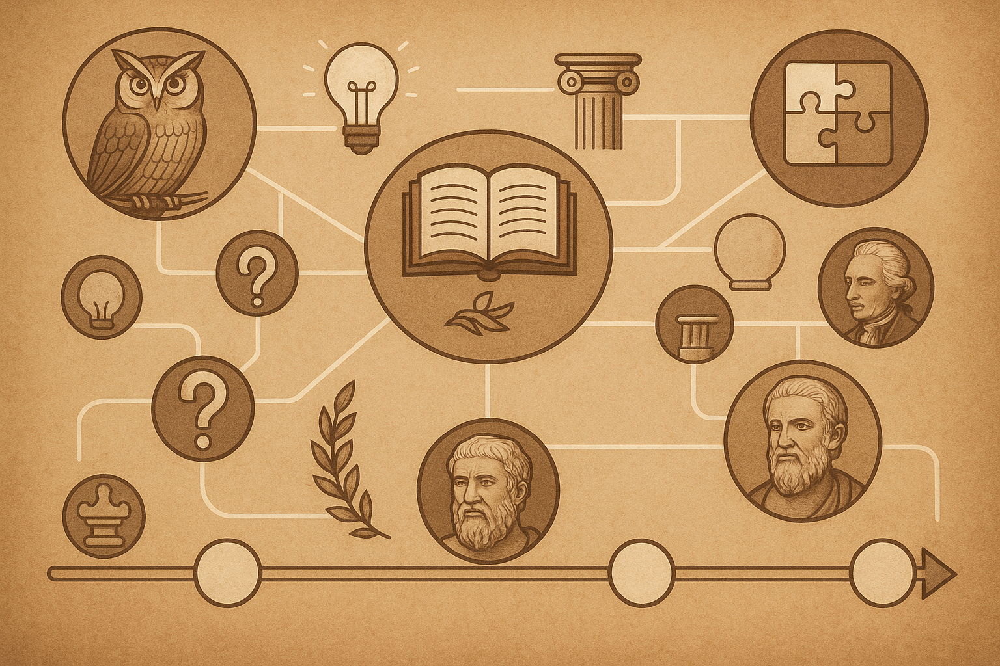

🗺️ O Poder dos Mapas Mentais e Linhas do Tempo Para Quem Quer Pensar Melhor
Já aconteceu com você? Tenta aprender algo novo, mas as informações parecem desconectadas. Estuda um ponto aqui, outro ali, e no fim sua mente tá um caos — nada se conecta direito.
Esse problema é comum. Mas existe uma técnica simples usada por estudantes de elite, empreendedores e pessoas que precisam memorizar e organizar grandes volumes de informação: Mapas Mentais e Linhas do Tempo.
💡 O que São Mapas Mentais e Por Que Funcionam?
Nosso cérebro conecta ideias em rede. Quando você organiza o conteúdo de forma visual, criando conexões entre os tópicos, sua mente entende melhor e a informação flui naturalmente.
- Entenda assuntos complexos com clareza
- Memorize informações de longo prazo
- Reveja conteúdos de forma rápida e eficiente
- Estimule a criatividade e o raciocínio lógico
🕰️ Linha do Tempo do Conhecimento: A Visão Que Faltava
Imagine visualizar toda a evolução das ideias mais brilhantes da humanidade. De Sócrates aos pensadores modernos, entendendo como cada ideia se conecta.
🚀 Como Acessar Um Mapa da Sabedoria Pronto e Atualizado
Criar um mapa mental sobre as grandes ideias pode levar meses ou anos. Ou você pode acessar um material pronto:
Conheça agora: O Mapa da Sabedoria — Linha do Tempo do Conhecimento Humano

❓ Perguntas Frequentes
- Mapas mentais realmente ajudam no aprendizado?
- Sim! Neurociência comprova que visualizar o conhecimento acelera a memorização e a compreensão.
- Esse Mapa da Sabedoria é difícil de entender?
- Não. É simples, visual e acessível, mesmo para iniciantes.
- Esse material é atualizado?
- Sim. O Mapa da Sabedoria recebe atualizações constantes com novos pensadores e conteúdos relevantes.
🎯 Conclusão: Visualizar o Conhecimento é Pensar Melhor
Você pode continuar tentando aprender tudo de forma solta, ou visualizar o que importa, entender o todo e acelerar o aprendizado.
O Mapa da Sabedoria te dá essa visão estratégica de forma prática:
Clique aqui e comece a explorar agora
Lembre-se: quem organiza a mente, domina o conhecimento. Só os gênios sabem disso.